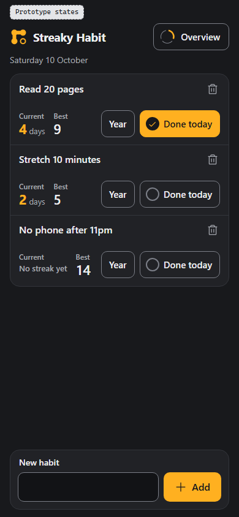
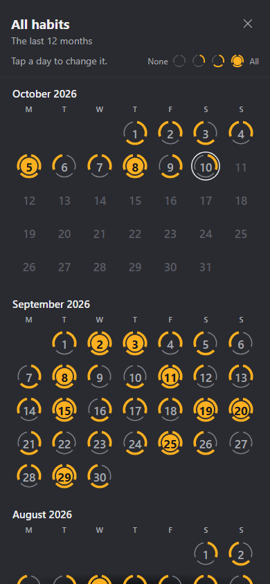
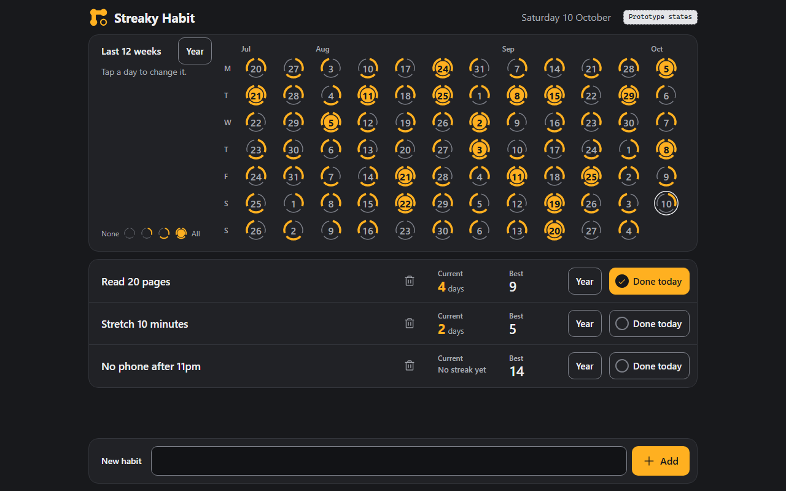

Round 1, your pick for the look
D Orbit Rings
Each habit was a ring of its last seven days, with the 12 weeks below.
F2 is direction F with your two notes from tonight built in. The overview keeps the last 12 weeks and gains a Year button that opens the whole year for every habit, and every habit row has a bin. Round 1 D and the first F sit beside it so you can see what moved. Every frame below is the real prototype, so you can tap Done today, open a Year view, tick a day, press a bin, and use Prototype states inside it. The desktop view is further down.
F2 does everything you listed in both rounds and nothing else. The page never scrolls at 1280 x 800, 390 x 844 or 360 x 780, only the list frame does. The add field stays in the same place with 3 habits or 12. A day reads the same in the overview, a habit's Year view and the new all-habits Year view, and a tick in any of them moves every number at once.
If you accept it, the next steps are lock the design system with its contrast ratios, compose every screen and state, wire the flow, then the golden files the build is checked against. The logo is redrawn with the name "Streaky Habit" after that.
1. F2 as the direction. Accept it, or give more notes for another revision.
2. The readings below. Where your words left a detail open, I or the designer chose. Each is easy to change. The highlighted rows are the ones most likely to matter to you.




| Your point | Round 1 D | F2 now | Where to see it |
|---|---|---|---|
| "I like Orbit Rings" | Charcoal, one amber, small rings with one segment per habit | The same colours, type and rings | Everywhere |
| "make the numbers in the calendar bigger" | 10.5 px day numbers on a desktop, 9.9 px on a phone | 16 px on a desktop and at 360, 16.8 px at 390 | The overview band, the Overview popup, the all-habits Year view |
| "it doesnt make the input field pushed down" | The add field moved down as habits were added | The add field is fixed below the list. It sits in the same place with 3 habits and with 12 | Prototype states, S3 12 habits |
| "we list down the habits", three functions each | Each habit was a card with a seven-day ring | Each habit is a row with Done today, Year, and Current and Best | The list |
| "The modal will show all days of the year" | No such view | Year on a row opens that habit's last 12 months, Current and Best at the top. Tap a day to tick or untick it | Year on any row |
| Overview on top, the list scrolls inside its own frame | The 12 weeks sat beside the habits and the page scrolled | Overview band on top, list frame below it, the page never scrolls | Desktop view |
| Phone, fixed input below, overview behind a button | Everything on one long page | The add field is pinned to the bottom. The Overview button in the header opens the 12 weeks as a full-screen popup | Phone view, Overview |
| "last 12 weeks but have a button to check last year", desktop and mobile | No such view | The overview stays 12 weeks. Its Year button opens all habits over the last 12 months, the same rings, and a day opens the day editor | Desktop, Year on the band. Phone, Overview then Year |
| "button or icon to remove a habit in the list itself" | A bin on each card | A bin on every row, quiet grey until you point at it. It opens the same confirm as before | The bin on any row |
The first column says who chose. ORCH is me, from your words. DESIGNER is the designer agent, where the brief left it open.
| Who | Reading | Why |
|---|---|---|
| ORCH | The all-habits Year view shows every habit together, one ring per day as the overview draws it, newest month first | You asked for a yearly popup "for overview", so it reads like the overview. Newest first matches a habit's own Year view |
| ORCH | Its Year button sits on the overview band's title line on a desktop, and in the Overview popup's header on a phone | It belongs to the overview, and on a phone the overview lives in that popup |
| ORCH | Delete habit also stays inside a habit's Year view | "in the list itself as well" reads as in addition, so both places open the same confirm |
| DESIGNER | On a phone the bin sits at the right end of the name line, with the numbers, Year and Done today on the line below. On a desktop the row is one line with the bin in its own column after the name | A 44 px bin does not fit on the second line at 360 px, and it keeps the bin well away from Done today so one is never pressed for the other. A phone row is 16 px taller for it |
| DESIGNER | On a desktop the overview runs weeks as columns, newest on the right. The phone popup runs weeks as rows, newest on top | Columns keep the band 7 rings tall so the list still gets room. A phone is too narrow for 12 columns of touch targets |
| DESIGNER | The Year buttons say "Year" in words, with no calendar icon | No calendar icon path is on disk and icons are never hand-drawn. One can be added from the icon set later |
| DESIGNER | In a habit's Year view, done days in a row are joined by an amber thread | The logo's idea, beads on one thread |
| ORCH | The big seven-day ring on each habit is gone | Your list layout gives each row Done today and a Year view instead |
| ORCH | The 12 weeks keep D's sideways shape, every past day a tap target | "i like the current orbit ones" |
| ORCH | The add field sits below the list on every width, like a chat box | "either before or after", after keeps it under the thumb on a phone |
| ORCH | Done today toggles, a second tap unticks today | A wrong tap can be undone on the spot |
| DESIGNER | One colour pair is just under the 3 to 1 rule. A thin not-done segment on a day you point at is 2.97 to 1, carried over from F | A one-line colour change fixes it. It touches F's colours, so it is left for the lock step unless you say otherwise |
Round 1, your pick for the look
Each habit was a ring of its last seven days, with the 12 weeks below.
Round 2, first build
D's look on your list layout. The one you reviewed tonight.
Round 2, revised, my pick
F with an all-habits Year view on the overview and a bin on every row.
F2 passed the designer's 252 of 252 render checks and my own separate 60 of 60 at 1280, 390 and 360 px. No console errors, no network requests, no page scroll, no sideways scroll at 360, every row control at least 44 px, and the add field unmoved after a delete. Screenshots are in checks/f2.